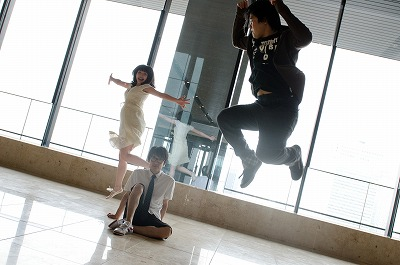

<div class="container-fluid ">
  <div class="row">
    <div class="col-sm-10 col-sm-offset-1 col-md-5 col-md-offset-4">
      <h4 class="color4">
        LOGICAL（ロジカル）：論理的に<br>
        OSCILLATOR（オシレーター）：音を創造する
      </h4>
      <br><br>音楽は、いくつかの不安定な要素によって構成されています。<br>
      当然、感情という
      最も大切でありながら最も不安定な要素もその中に含まれます。<br>
      感情あふれる音楽は美しい。<br>
      けれども、ときにわれわれ音楽を提供する側も、
      受け手であるみなさんも、<br>不安定な感情論によって振り回されすぎてしまい、
      あいまいな判断を下してしまう。<br><br>
      「現在の音楽がつまらない。」<br><br>
      よく聴くこんなフレーズも、実は一体、どれほど信頼性があるのかわからない<br>
      まま、私たちはただあいまいに音楽を語ってきたのかもしれない。<br><br>
      ぼくらは、もっとしっかりと、音楽を語ろうと思う。<br>
      論理的に、より確かな方法で、音に近づき、音を創り出していきたい。<br>
      <br>そんな思いをこめて、この名前を選びました。<br><br>
      <br><br>2009年７月、　ほぼうさ（Dr,Syn）を中心にメンバーが集まり、バンド結成。<br><br><br>
    </div>
  </div>
</div>
